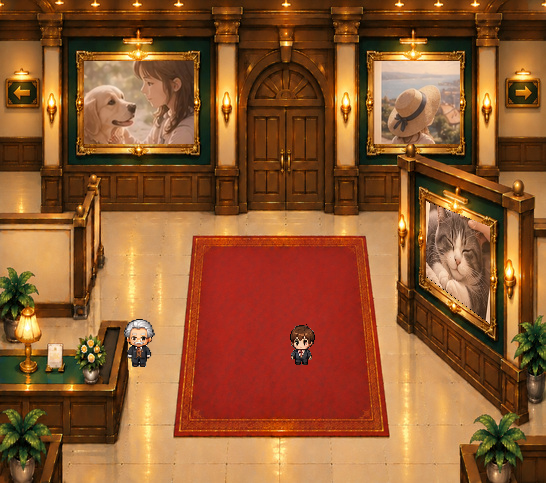
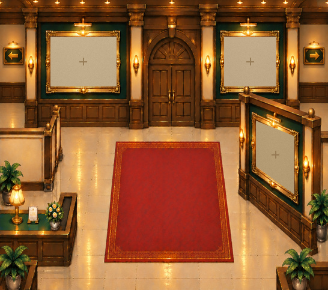
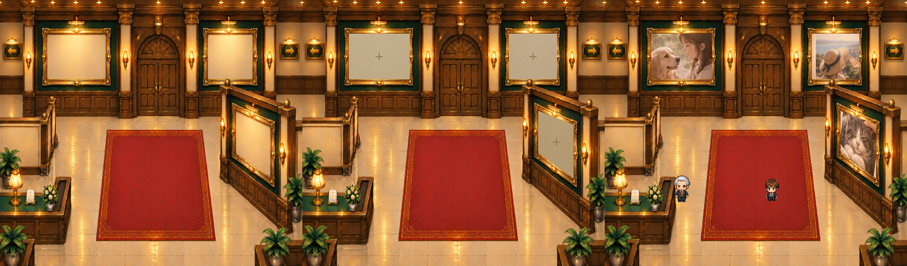

制作したPNG：11点（額縁の前景候補3、空き枠3、写真窓マスク3、既存の左右手すり前景2）。
技術的な合成と形状を検証した段階です。背景から額縁を完全に取り除いたわけではなく、正式美術として合格した素材ではありません。
初回素材11点・QA一式（ZIP）を開く
技術的な合成と形状を検証した段階です。背景から額縁を完全に取り除いたわけではなく、正式美術として合格した素材ではありません。
原本を使用した写真合成テスト

登場人物は正式PNG原本。写真は表示試験用サンプルで、ユーザー写真ではありません。
空き枠の表示テスト

空き枠の台紙は画像として独立しているため、作品を登録したときに消せます。
原本・空き枠・写真入りの比較

いずれも現行の546×483構図。独立素材の抜き出しに伴う周囲の画質差を確認します。
資料は監修前の実験用です。ゲーム本体・保存データ・正式キャラクター素材を変更していません。